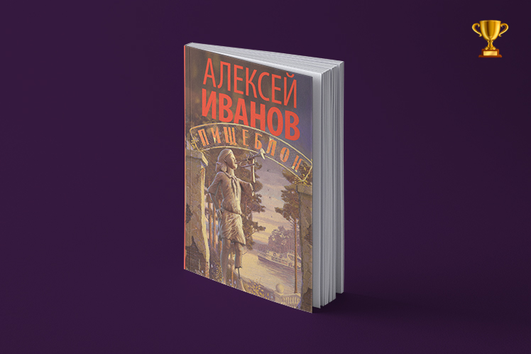

<!DOCTYPE html>
<html prefix="og: http://ogp.me/ns#"></html>
<head>
  <meta charset="utf-8"/>
  <meta name="viewport" content="width=device-width, initial-scale=1.0"/>
  <meta property="og:url" content="http://chernotrop.reviews/default"/>
  <meta property="og:type" content="article"/>
  <meta property="og:title" content="Чернотроп ⚒︎ Русский реализм"/>
  <meta property="og:description" content="Скрещиваем русскую реалистическую прозу с современностью"/>
  <meta property="og:image" content="http://chernotrop.reviews/img/default-preview.jpg"/>
  <meta property="og:image:width" content="1200"/>
  <meta property="og:image:height" content="600"/>
  <link href="https://fonts.googleapis.com/icon?family=Material+Icons" rel="stylesheet"/>
  <link rel="stylesheet"/><!-- Yandex.Metrika counter --> <script type="text/javascript" > (function(m,e,t,r,i,k,a){m[i]=m[i]||function(){(m[i].a=m[i].a||[]).push(arguments)}; m[i].l=1*new Date();k=e.createElement(t),a=e.getElementsByTagName(t)[0],k.async=1,k.src=r,a.parentNode.insertBefore(k,a)}) (window, document, "script", "https://mc.yandex.ru/metrika/tag.js", "ym"); ym(56951962, "init", { clickmap:true, trackLinks:true, accurateTrackBounce:true, webvisor:true, trackHash:true }); </script> <noscript><div></div></noscript> <!-- /Yandex.Metrika counter -->
  <title>Чернотроп ⚒︎ Русский реализм</title>
<link href="./css/style.bundle.css" rel="stylesheet"></head>
<body class="body_dark">
  <header class="header header_dark">
    <div class="header__logo">
      <div class="logo logo_dark"><a class="logo__link" href="/">ЧЕРНОТРОП</a></div>
    </div>
    <nav class="header__menu"><a class="menu-item" href="index.html" target="blank">главная</a><a class="menu-item" href="contacts.html">контакты</a><a class="menu-item" href="http://ttttt.me/blacktrope" target="blank">telegram-канал</a>
    </nav>
    <div class="header__menu_mobile" id="modeValue"><a href="menu.html">
        <svg xmlns="http://www.w3.org/2000/svg" width="24px" height="24px" viewBox="0 0 24 24">
          <path d="M0 0h24v24H0z" fill="none"></path>
          <path class="icon_white" d="M3 18h18v-2H3v2zm0-5h18v-2H3v2zm0-7v2h18V6H3z"></path>
        </svg></a>
    </div>
  </header>
  <div class="wrap">
    <div class="content">
      <div class="pagination"><a class="pagination__year" href="index.html">2020</a><a class="pagination__year pagination__year_active" href="2019.html">2019</a><a class="pagination__year" href="2018.html">2018</a>
      </div>
      <div class="articles-2019">
        <div class="articles-2019__row-sb"><a class="article50" href="salnikov-oposredovanno.html">
            <div class="article50__img"></div>
            <div class="article50__content">
              <h3>Вылизан, но</h3>
              <p>О том, как желание угодить читателю испортило новый роман Алексея Сальникова</p>
            </div></a><a class="article50" href="how-dare-karenina.html">
            <div class="article50__img"></div>
            <div class="article50__content">
              <h3>Да как ты смеешь?! «Анна Каренина»</h3>
              <p>Время идёт, роман по-прежнему не оставляет читателей равнодушными. Про Левина потихоньку забывают</p>
            </div></a>
        </div>
      </div>
      <div class="sas">
        <div class="section-header"><span class="section-header__colon">верста первая</span>
          <h2>Селфи вместо сабли</h2>
        </div>
        <div class="sas__articles">
          <article class="sas__article-1"><a class="sas__articles-headline" href="selfie-vs-sword.html">русская молодёжь одержима путешествиями?</a>
            <p class="sas__articles-description sas__article-1-description">рассказываем на примерах русской прозы XIX-го века, почему вам уже не хочется заглядывать в инстаграм</p>
          </article>
          <div class="article-separator">
            <div class="article-separator__border"></div>
          </div>
          <article class="sas__article-2"><a class="sas__articles-headline" href="senchin-paris.html">герои сенчина не хотят гулять по парижу</a>
            <p class="sas__articles-description sas__article-2-description">они хотят ныть, бухать и работать охранниками в магните. нам нужно с ними что-то делать.</p>
          </article>
          <div class="article-separator">
            <div class="article-separator__border"></div>
          </div>
          <article class="sas__article-3"><a class="sas__articles-headline" href="carrots-rotterdam.html">в 2000-м году поэт борис рыжий побывал в роттердаме</a>
            <p class="sas__articles-description sas__article-3-description">каждый раз, гуляя пьяными по улочкам европы, мы вспоминаем «роттердамский дневник»</p>
          </article>
        </div>
      </div>
      <div class="articles-2019-2">
        <div class="section-header"><span class="section-header__colon"></span>
          <h2>Книжные рецензии</h2>
        </div>
        <div class="articles-2019-2__row-fs"><a class="article50" href="ivanov-foodunit.html">
            <div class="article50__img"></div>
            <div class="article50__content">
              <h3>Нет, не о вампирах</h3>
              <p>О новом романе Алексея Иванова «Пищеблок», его надуровнях и скрытой под вампирской тематикой морали</p>
            </div></a><a class="article50" href="petrovsky-darling.html">
            <div class="article50__img"></div>
            <div class="article50__content">
              <h3>Дорогая, я дома</h3>
              <p>О романе евроскептика и русского националиста Дмитрия Петровского</p>
            </div></a>
        </div>
        <div class="section-header"><span class="section-header__colon"></span>
          <h2>Наблюдая за журналом «Сеанс»</h2>
        </div>
        <div class="articles-2019-2__row-fs"><a class="article50" href="hu-bo-elephant.html">
            <div class="article50__img"></div>
            <div class="article50__content">
              <h3>Мёртвый китайский Хемингуэй</h3>
              <p>Его звали Ху Бо и он покончил с собой. «Сеанс» перевёл несколько рассказов</p>
            </div></a><a class="article50" href="salnikov-1904.html">
            <div class="article50__img"></div>
            <div class="article50__content">
              <h3>Бенджамин Баттон современной прозы</h3>
              <p>Если развернуть публикации Алексея Сальникова вспять, проглядывается логичный путь развития молодого писателя</p>
            </div></a>
        </div>
      </div>
    </div>
  </div>
<script type="text/javascript" src="./js/bundle.js"></script></body>